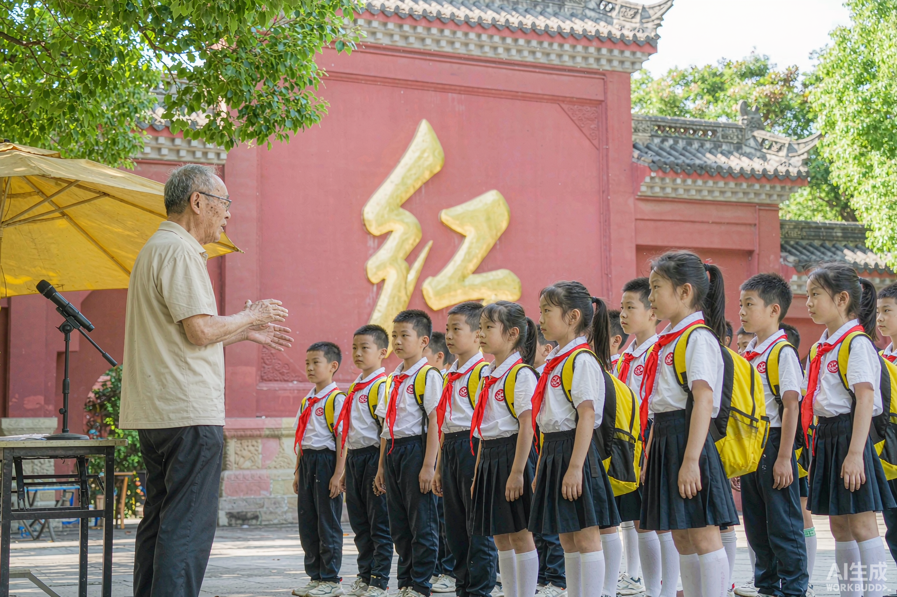

四大公益研学项目，面向青少年与志愿者全程免费开放。 不收一分钱，只为让更多孩子听见历史的声音。

用童声讲述峥嵘岁月
面向 8—14 岁少年儿童，与井冈山革命博物馆、瑞金叶坪旧址群等场馆共建。孩子们接受语音表达、历史知识、礼仪规范培训后，持证上岗，在节假日的革命旧址为游客义务讲解。

把家乡的故事讲给远方来客
面向大学生与青年志愿者。利用周末驻点黄洋界、沙洲坝、长征第一渡等旧址，为游客提供公益讲解。平台提供统一的史料手册与培训，优秀志愿者可参与"红色故事进校园"巡讲。

重走长征路，从于都河畔出发
7 天 6 夜主题研学营：于都集结（夜渡情景课）→ 瑞金（红井 + 二苏大）→ 井冈山（挑粮小道 + 黄洋界）→ 结营仪式。全程由历史专业研究生随队讲解，衣食住行费用由公益基金支持。

把历史讲给更多孩子听
与省内中小学共建"红色课堂"：志愿者带着故事、文物复制品和影像资料走进教室，一节课讲一个江西红色故事。已覆盖 40 余所学校，课程包免费向乡村学校开放申领。